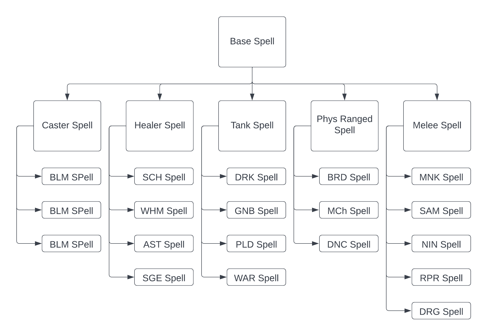

Customize Spell object
One thing that the simulator allows is to change at will the different actions already present and even create completely arbitrary new ones. With that goal in mind, we will focus on the inner functionning of the Spell class in order to understand how to customize it to your own will.
Hierarchy of Spell
As you probably know by now, there are 3 main types of Spell in the simulator : Base, Role and Job spell. The way it works is that each different type of Spell is a subclass of a previous one where Base spell is the parent class of all Spell. Here is the hirerachy of the whole Spell objects.
{kind=link}
Warning
Although actions that can be performed by the player are refered to as Spell objects, note that the game does not classify every actions that can be done as Spells. Do not mix Spells in final fantasy and in the code.
For example, this means that a Blackmage Spell is a children of Caster Spell which is a children of Base Spell.
As mentionned earlier a Spell object contains information about an action such as Potency, Mana cost, etc. But in reality it contains much more.
Here is the constructor of the Base_Spell class:
class Spell:
"""
This class is any Spell, it will have some subclasses to take Job similar spell, etc.
"""
def __init__(self, id : int, GCD : bool, CastTime : float, RecastTime : float, Potency : int, ManaCost : int, Effect, Requirement):
"""
Initialization of a Spell
id : int -> id to identify the action
GCD : bool -> True if the action is a GCD
CastTime : float -> Cast time of the action
RecastTime : float -> Recast time of the action
Potency : int -> base potency of the action
Manacost : int -> base manacost of the action
Effect : function -> A function called upon the execution of the action which affects the player and the enemy.
Requirement : function -> Bool -> function called upon the execution to verify if the action can be executed.
"""
self.id = id
self.GCD = GCD #True if GCD
self.Potency = Potency
self.ManaCost = ManaCost
self.CastTime = CastTime
self.RecastTime = RecastTime
self.Effect = [Effect]
self.Requirement = Requirement
self.DPSBonus = 1
self.TargetID = 0 #By default 0
The new things that weren’t really discussed before are Effect, Requirement, DPSBonus and TargetID. TargetID is not very important here and is only used for when we are saving and/or importing an already existing saved fight. DPSBonus only affects DOTs and is used to remember the bonus at the time of application.
Now say one wishes to create a test version of Fire 1 and make it extremely brocken with insanely high potency, close to 0 mana cost and very short casting time. Lets go through how someone would make that happen.
Modify potency, mana cost, cast time, recast time, etc. of an action
Make a deepcopy of an action
In order to modify an already existing action you simply need to do a deepcopy of it. Here is an example where the user would make a copy for Fire I:
from ffxivcalc.Jobs.Caster.Blackmage.BlackMage_Spell import *
from copy import deepcopy
newFire1 = deepcopy(Fire1) # Creates a new deepcopy of the fire 1 instance.
You can now use this deepcopy and do whatever you want with it. The simulator will accept your newFire1 as input for an action that a player can do. Lets now look into what to customize from an action.
Modify Potency
For that you simply need to change the .Potency value of the object.
newFire1.Potency = 1000 # Changing the potency to 1000
Modify Casting time and recast time
newFire1.CastTime = 1 # Casting time in second
newFire1.RecastTime = 2.5 # 2.5 second before any other GCD actions can be done IF newFire1 is a GCD
Modify mana cost
newFire1.ManaCost = 10 # Updating mana cost
Requirement and Effect
Before modifying the Requirements and effect, it is important you understand whay they are.
Spell Requirement
As you know by now, the simulator will check for if an action can be performed before doing it. This checking can be ignored if we let RequirementOn be false, but otherwise the action will only be casted only if the player can. The way this all works out is whenever a player is casting an action, the simulator will look at the Requirements of the action and the Requirement will say weither the action can currently be casted.
Note
Every requirement of a Spell is actually a function that is called by the simulator. The function always takes as inputs the Player object casting the action and the Spell itself.
Here are examples from the code itself. We will look at the blackmage’s spell Fire I.
Fire1 = BLMSpell(141, True, 2.5, 2.5, 180, 800, True, False, ApplyFire1, [ManaRequirement]) # Located in Blackmage_Spell.py
...
def ManaRequirement(player, Spell): # Located in Base_Spell.py
"""
Requirement function for mana
"""
if player.Mana >= Spell.ManaCost :
player.Mana -= Spell.ManaCost #ManaRequirement is the only Requirement that actually removes Ressources
return True, -1
return False, -1 # Ignore mana is a field of the fight set to true if we ignore the mana
Note
Since an action can have more than 1 requirement, we give the Spell constructor a list of requirements. It will test for all of them.
Are you can see, the last input in the Fire I instance is where we specify that our requirement for execution is ManaRequirement. This lets the simulator know that before casting the action we have to pass this ManaRequirement. Under you have the ManaRequirement code, and as you can see the requirement takes as input the Player object casting it and the Spell object for which we are testing. It then does a simple check to see if the player has enough mana and returns a boolean value corresponding to if we pass or fail the test.
Note
This ManaRequirement function has been altered by in order to show its main features more easily. It is not the one in the actual code.
Here is another example for Xenoglossy :
def PolyglotRequirement(Player, Spell): # Located in Blackmage_Spell.py
return Player.PolyglotStack > 0, Player.PolyglotTimer
...
Xenoglossy = BLMSpell(16507, True, Lock, 2.5, 800, 0, False, False, ApplyXenoglossy, [PolyglotRequirement]) # Located in Blackmage_Spell.py
As you might have realized, the requirement function returns a boolean but also a numerical value. This numerical value is used in order to know how long would the player have to wait for a the requirement to be satisfied. This then lets the simulator decide weither to stop the simulation or just make the player wait until the requirement can be satisfied. The threshold value to wait for can be adjusted, but it is by default 1 second. This is because if an action was 0.02 seconds away from being doable, it is preferable to simply have the player wait rather than to crash the whole simulation.
So the skeleton of a requirement function is as such :
def Requirement(Player : PlayerObject, Spell : SpellObject):
...
some logic
...
return boolean, float # How long until we can do it
You can simply let the numerical value be -1 if you don’t want to worry about it.
With this you can now create any Requirement functions you can dream of. However, the most interesting thing to change on an action is the effect it has on the fight.
Spell Effect
Every Spell object has an Effect function. Effect is a function that takes as input the Player instance casting the action and the Enemy the player is targetting with the action. Everytime an action is casted, the simulator calls the action’s Effect function and this function changes the state of the Player and of the Enemy. Refering to the Fire I example as above, here is the Effect function of Fire I :
Fire1 = BLMSpell(141, True, 2.5, 2.5, 180, 800, True, False, ApplyFire1, [ManaRequirement]) # Located in Blackmage_Spell.py
...
def ApplyFire1(Player, Enemy):
Player.AddFire() #Add 1 fire
if Player.SharpCast: #If sharpcast
Player.Fire3Proc = True
Player.SharpCast = False
As you can see, when Fire I is casted, it goes through the ApplyFire1() function. This function uses the AddFire() function (which adds 1 Astral Fire to a blackmage instance) and it also checks if the player has a Sharpcast stack as it would give it a Fire III proc if it does.
Here is another example with Ninja’s trick attack action:
TrickAttack = NinjaSpell(2258, False, Lock, 0, 400, ApplyTrickAttack, [TrickAttackRequirement], False, False)
...
def ApplyTrickAttack(Player, Enemy):
Player.buffList.append(TrickAttackBuff)
Player.TrickAttackCD = 60
Player.TrickAttackTimer = 15
Player.EffectCDList.append(TrickAttackCheck)
Note
As you can see a Ninja’s action has some more inputs, do not worry about those for now. The important part is the Effect and Requirement input.
So when TrickAttack is casted, the simulator calls the ApplyTrickAttack() function. This function does the following :
Gives trick attack buff to the player
Sets the cooldown of trick attack to 60 seconds
Sets the timer of Trick attack to 15 seconds
Appends a function whose job is to check for when the 15 seconds have passed and remove the trick attack effect.
Most Spell instance will have such a function that changes the state of the player and/or of the enemy being targetted by the action.
So the skeleton of an Effect function is as such :
def Effect(Player : PlayerObject, Enemy : EnemyObject):
...
some logic
...
# Does not return anything
Modify Requirement
Say we want our newFire1 to have no requirements. We would simply change the requirement field to an empty list.
newFire1.Requirement = [] # Empty list so No requirement
Modify Effect
Say instead of only augmenting Astral fire by 1 we want our new action to augment by 3. We can create this new effect function and modify the effect field of newFire1:
def ApplynewFire1(Player, Enemy):
Player.ElementalGauge = 3 # Setting Astral fire = 3
newFire1.Effect = [ApplynewFire1] # Giving new Effect AS A LIST
Warning
Just like for requirements, Effect must be a list. Meaning that if you want to modify the effect you must give it within a list just as shown above.
Warning
If you do your own Requirement and Effect function, they must always accept both the shown input even if they do not use it.
We can now simulate a Blackmage using this new action and see the result.
from ffxivcalc.Jobs.Caster.Blackmage.BlackMage_Spell import *
from copy import deepcopy
newFire1 = deepcopy(Fire1) # Creates a new deepcopy of the fire 1 instance.
newFire1.Potency = 1000 # Changing the potency to 1000
newFire1.CastTime = 1 # Casting time in second
newFire1.RecastTime = 2.5 # 2.5 second before any other GCD actions can be done IF newFire1 is a GCD
newFire1.ManaCost = 10 # Updating mana cost
newFire1.Requirement = [] # Empty list so No requirement
def ApplynewFire1(Player, Enemy):
Player.ElementalGauge = 3 # Setting Astral fire = 3
newFire1.Effect = ApplynewFire1 # Giving new effect
newFight = Fight(newEnemy, ShowGraph) # Creating new Fight instance
BLMPlayer = Player([], [], Stat, JobEnum.BlackMage) # Creating BLM player
BLMPlayer.ActionSet = [newFire1,newFire1,newFire1,newFire1,newFire1,newFire1,newFire1,newFire1,newFire1,newFire1,newFire1,newFire1] # Wacky action set
newFight.AddPlayer([BLMPlayer]) # Adding player to the fight
newFight.RequirementOn = True # Will check for actions requirement
newFight.IgnoreMana = False # Will check for mana
vocal = True # Want to output data in text
newFight.SimulateFight(TimeUnit, TimeLimit, vocal) # Simulating the fight
Here are the results:
The Fight finishes at: 27.38
The Total Potency done by player BlackMage was : 20800.0
This same player had a Potency Per Second of: 759.68
This same Player had an average of 1733.33 Potency/Spell
This same player did 12 GCD.
The DPS is : 37666.91
=======================================================
The Enemy has received a total potency of: 20800.0
The Potency Per Second on the Enemy is: 759.68
The Enemy's total DPS is 37666.91
As you can see, the numbers are completely off the chart since this new action is completely brocken.
Note
It would have been completely possible to create such an action by simply using the BlackmageSpell constructor rather than copying an existing one and changing its attributes. However if you do so, refer to the constructor of the object to make sure you know what to give as input.